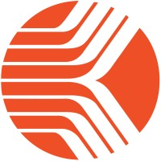

01. About Me
I'm a software engineer and system architect with over 10 years of experience designing, building, and scaling high-performance distributed systems. Currently at Microsoft, I'm developing AI-powered Copilot Agents leveraging LLMs and Microsoft Copilot Studio.
I have a demonstrated ability to diagnose complex performance bottlenecks and systematically optimise systems to extract maximum throughput from existing infrastructure. My deep expertise spans Golang, TypeScript, and Java, with extensive hands-on experience across Elasticsearch, Kafka, gRPC, Redis, and cloud platforms like GCP and AWS.
I actively leverage AI and LLMs as a force multiplier in my engineering workflow — from rapid prototyping and architecture exploration to automated code analysis and intelligent debugging. This allows me to ship higher-quality software faster while staying focused on the problems that matter most.
I'm committed to rigorous system design, performance engineering, and applying AI to accelerate software delivery at scale.
02. Skills & Technologies
Languages
Technologies
Cloud Platforms
Architecture
AI & Automation
03. Experience
Senior Software Engineer
 Microsoft — ESS (Employee Self Service) Team
October 2025 — Present
Microsoft — ESS (Employee Self Service) Team
October 2025 — Present
- Building ESS, a Copilot Agent that streamlines the employee experience across HR and IT touchpoints, serving Microsoft's global workforce of 200,000+ employees
- Took end-to-end ownership of extensibility platform post engineering re-org; resolved critical production blockers that unblocked ESS rollout for multiple strategic enterprise customers
- Designed natural-language workflows powered by LLMs and Copilot Studio, reducing average HR/IT task completion time by replacing multi-step manual processes with conversational interactions
- Improved ESS user experience through UX enhancements that significantly increased user engagement and satisfaction across enterprise deployments
- Led the onboarding of multiple Fortune 500 and multi-million dollar enterprise customers onto the ESS platform, contributing to product revenue growth
- Streamlined support channels and built knowledge-sharing processes, reducing ticket resolution time and enabling the support team to operate independently
- Mentored and onboarded new engineers, distributing ownership across 3 additional contributors and accelerating team execution velocity
Technical Architect
Goto Group (Gojek - Tokopedia) / ByteDance (TikTok Shop) April 2021 — May 2024- Optimized search architecture reducing p99 latency from 210ms to 105ms by tuning Elasticsearch index mappings, shard strategy, and data distribution
- Reduced memory allocations in hot Go paths, cutting CPU usage and GC pauses across high-throughput services
- Built an Index Mapping Analyser (Golang) that automated Elasticsearch optimisation across 100s of ES clusters at Tokopedia
- Designed HLD & LLD and developed backend systems for e-commerce applications — ingestion pipelines, user-facing traffic, and internal APIs
- Set up automated canary deployments for Go services, significantly reducing manual post-deployment monitoring effort
- Created a Linux System Metrics tool analysing CPU, Disk IO, throughput & memory to recommend cost-effective infrastructure across Go services, ES clusters, Kafka, and PostgreSQL
- Led small teams of 4–5 engineers for specific high-impact initiatives
Senior Software Engineer 2
Fareye Logistics April 2018 — March 2021- Decomposed a monolithic application into event-driven microservices communicating via Kafka, designed and maintained as sole developer
- Architected a highly scalable Node.js real-time tracking platform for Domino's India delivery operations, handling millions of RPS — enabling live driver-to-customer visibility across the country and powering data-driven delivery performance incentives for partners nationwide
- Contributed to the open-source Debezium project by reporting functional and performance issues that improved the tool for the community
Software Engineer

Kronos Incorporated May 2015 — March 2018- Diagnosed and resolved critical production issues in an enterprise payroll processing application serving large-scale workforce operations
- Worked across the full stack with Java, TypeScript, Node.js, Angular, PostgreSQL, and MS SQL
B.Tech — Computer Science & Engineering
JSS Academy of Technical Education March 2011 — March 2015 • GPA: 8/1004. Projects
Elasticsearch Mapping Analyser
The Elasticsearch Mapping Analyzer (EMA) automates the process of identifying potential optimizations for any Elasticsearch index, based on queries run against that index.
ComfyUI Deploy
A CLI utility that automates deploying ComfyUI workflows on new machines — parses workflow JSON to extract all model and custom-node dependencies, searches HuggingFace, CivitAI, and ComfyUI Manager for download URLs, and installs everything to the correct directories with parallel downloads.
05. Publications
Maximizing Profits Through Efficient Infrastructure Cost Management
A comprehensive guide to optimizing cloud infrastructure costs — covering compute instances, disk strategies, RAM resizing, network optimizations, and execution playbooks for engineers at scale.
Things Nobody Will Tell You Setting Up a Kafka Cluster
Hard-won production lessons on Kafka cluster setup — from vm.swappiness tuning and file descriptor limits to disk IO pitfalls, page cache sizing, GC debugging, and partition strategy.
06. What My Manager Says
Ankur has demonstrated immense drive, curiosity and exceptional customer focus delivering great business impact in this cycle.
Since engg re-org in December, Ankur took over the ownership of extensibility overall in particular focusing on Workday ISV enhancements. By tackling several key production issues like JSON parsing, authentication configurations and several others, he helped unblock ESS adoption for several key ESS customers and maintaining customer confidence. He has shown extreme ownership, strong analytical ability and collaboration across teams.
Ankur went over and beyond to timely unblock customers by getting on customer calls even outside regular hours, this showed his immense dedication to his work and ensuring success for ESS as a product. Along the way he helped streamline support channels to ensure our support team is better equipped to help customers and imparting knowledge along the way. This really shows his structured mindset, building processes for scale. He also effectively onboarded new engineers to the project and mentored them to build their own expertise, thus distributing ownership and improving execution velocity.
He has shown commendable maturity and leadership by empowering people around him. This is a key skill to possess as he grows into more senior roles. Going forward, I would like Ankur to maintain the momentum and drive more meaningful impact.